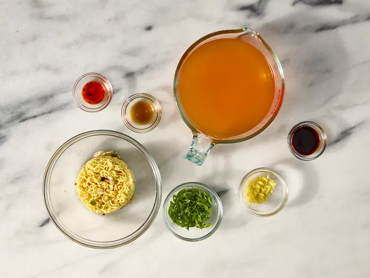
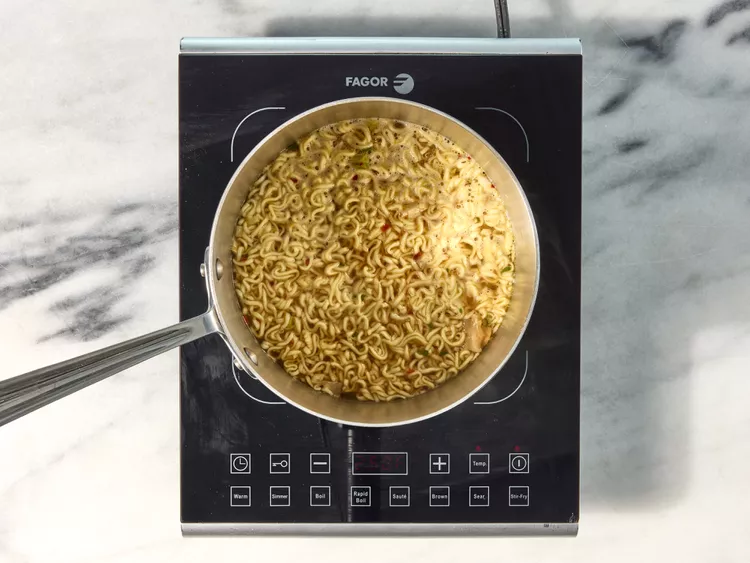
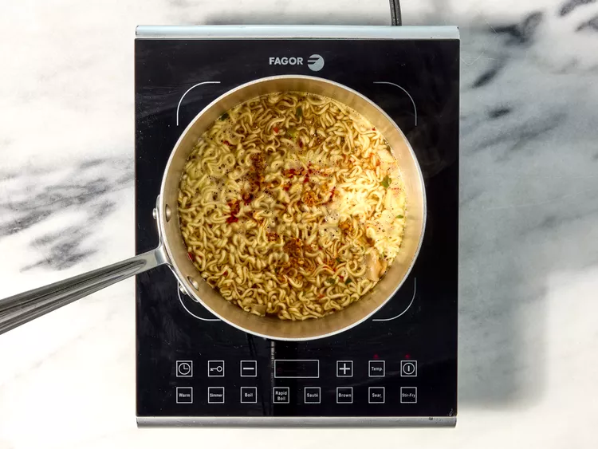
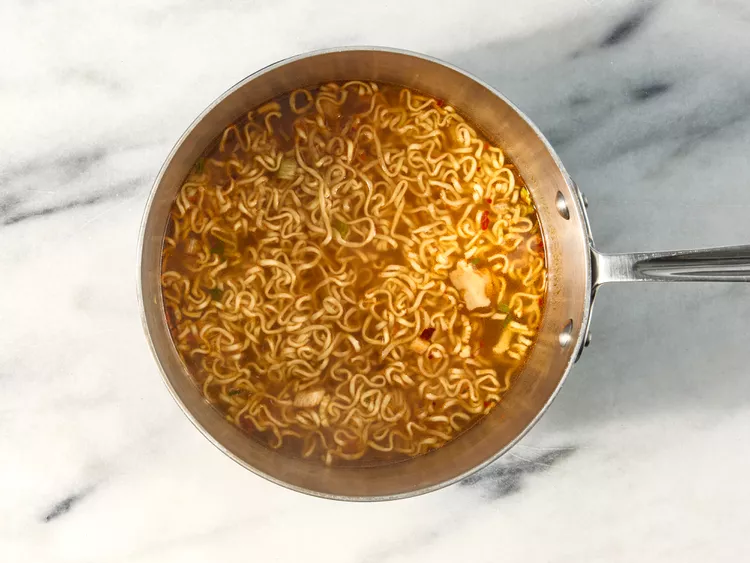

Gather the ingredients.
Combine broth and noodles in a medium saucepan; cover and bring to a boil over high heat, stirring to break up noodles.
Reduce heat to medium and add soy sauce, chili oil, and ginger. Simmer, uncovered, for 10 minutes.
Stir in sesame oil.
Garnish with green onions and serve.